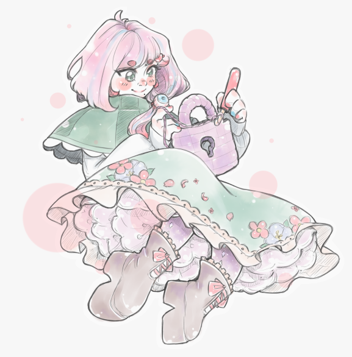

<section class="rl-front-page">
  <div class="rl-front-page-head">{% include navigation.html %}</div>

  <div class="rl-front-page-body">
    <div class="container">
      <div class="rl-main-top">
        <div class="rl-main-sticker">
          
        </div>

        <div class="rl-main-description">
          <p class="rl-main-description-highlight">
            Crochet is a tool for creating and remixing interactive stories, safely.
          </p>

          <p>
            Crochet goes to great lengths to make creating, running and remixing content
            as safe and privacy respecting as possible. Content built with
            Crochet can only use your computer and your data in ways you explicitly
            consent to---it can't change your files or send your information over the
            internet without your knowledge and consent.
          </p>

          <p>
            Crochet is free to use, open-source, and anything you create with Crochet can
            be used for commercial purposes.
          </p>

          </div>
        </div>
      </div>

      <div class="rl-timeline-container">
        <ul class="rl-timeline">
          {% for post in site.posts reversed %}
          <li class="rl-timeline-point">
            <div class="rl-timeline-date">
              {{ post.date | date_to_long_string }} &bullet; {{ post.content |
              number_of_words }} words
            </div>
            <a href="{{ post.url }}">
              <strong class="rl-timeline-title">{{ post.title }}</strong>
              <span class="rl-timeline-excerpt">{{ post.snip }}</span>
            </a>
          </li>
          {% endfor %}
        </ul>
      </div>
    </div>
  </div>
</section>

{% include footer.html %}
